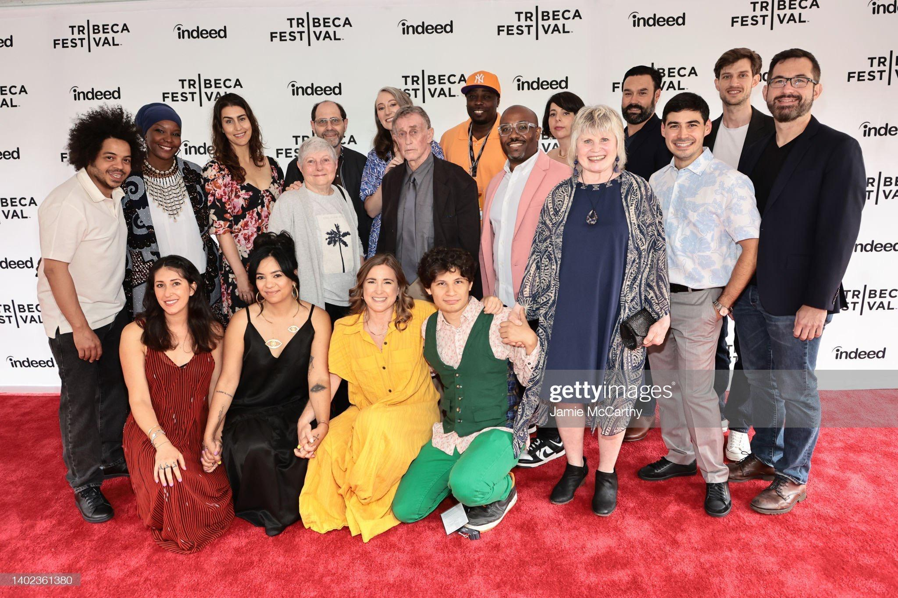

April 25, 2017
Ahmed Hassan has worked on numerous acclaimed projects, including 'Children of the Revolution' and 'The Square.' With his unique storytelling abilities, he has contributed to the world of filmmaking through his exceptional cinematography skills.
'Children of the Revolution' followed three young revolutionaries as their differing visions for the new Egypt collided. Ahmed Hassan starred as one of the main characters and was responsible for camera setups, lighting, and sound. IMDb
'The Square' is a riveting, deeply human chronicle of the Egyptian protest movement from the 2011 overthrow of military leader Hosni Mubarak through the ousting of Mohammed Morsi in 2013. Ahmed Hassan filmed critical footage during these events. IMDb
Ahmed Hassan worked as a Post-production Supervisor at Field of Vision on 'Homeland is not a Series,' a message from the Arabian Street Artists who engineered a graffiti hack on the show Homeland. IMDb

'Ultras of Egypt' is a documentary that offers an unseen view of the Arab Spring and its fatal consequences for Egypt's most passionate sports fans. Ahmed Hassan worked as an archivist and storyteller on this project. IMDb
Ahmed Hassan worked as a Project Manager in Istanbul, Turkey, providing filmmaking workshops for individuals displaced by war. Key activities of this project included photojournalism, videography, film editing, lighting, and directing. Vimeo
At Relief International, Ahmed Hassan served as a video production subject matter expert and advisor, working with management to maintain and enforce best practices for creating high-quality video content. Relief International
Ahmed Hassan directed, edited, and served as a cinematographer for the documentary 'Decade,' which was part of the 8th edition of The Day of the Middle East: Dispatches from the Revolution. D66
Ahmed Hassan worked as co-producer and cinematographer on 'Subject Future In,' a documentary that focuses on the ethics and responsibility inherent in documentary filmmaking. The film examines well-known documentaries of the past decade and reveals the impact their commercial success has had on the lives of the onscreen subjects. IMDb